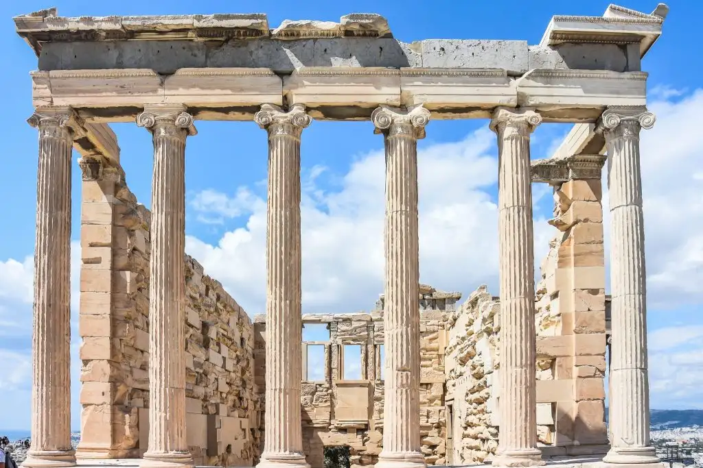

Sobre el llamado paso del mito al logos

Se produce con este término un efecto semejante al de otros dentro de la terminología filosófica, en la que el lema termina por reducir el contenido mismo de lo que se quiere decir con él a la mínima expresión. También sucede con otros, como «giro copernicano» o «teoría de las ideas». Decía Marzoa que semejantes interpretaciones sencillamente no deberían merecer nuestra atención. No obstante, estas simplificaciones tienden a ejercer una funcionalidad mental de la que parece verdaderamente difícil desprenderse, y es en verdad digno de estudio cómo los sucedáneos de explicación envueltos en filosofemas pueden llegar a tener tan insidiosa vitalidad.
No es este el propósito ahora del texto, sino detenerse en intentar organizar una versión que se pretende no meramente mitológica de este fenómeno que desde Nestle recibe esa denominación.
Nada de lo que voy a decir aquí, por lo tanto, puede entenderse como novedoso o fruto de mi creatividad, sino como el resultado de distintas posiciones que simplemente trato de verbalizar.
¿Puede llevarse a cabo una separación esencial entre la filosofía y otras formas institucionales que se desarrollan en el mundo antiguo, como la religión olímpica, los misterios de Eleusis o las tragedias griegas? Desde mi punto de vista, solo cabe una diferenciación institucional, si bien no es posible una separación absoluta entre ese conjunto de instituciones que conforman el tejido de lo que podríamos llamar civilización griega. Una disociación, pues, más que una separación.
Podríamos clasificar en tres modos las formas de establecer la vinculación entre ese conjunto o tejido institucional: en primer lugar, concebirlo como una separación entre los términos; en segundo lugar, como una disociación entre estos; y, en último lugar, como una continuidad holística entre todos. Voy a sostener aquí una concepción que se mantiene en la disociación frente a las otras interpretaciones.
Para defender este planteamiento, voy a atenerme a varios principios que conviene clarificar de salida:
En primer lugar, vamos a entender la filosofía como una práctica o un ejercicio real a través de razones que no excluye, sino más bien incluye, la posibilidad de llevar a cabo razonamientos a partir de mitos y de cualquier otro recurso existente, como son las técnicas de pesca o navegación o cualesquiera otras operaciones que se den en el medio social, ya sean de tipo jurídico o político. No me voy a detener, por lo tanto, en qué se pueda entender por filosofía más allá de esto, porque eso desbordaría los límites de este texto. Sobre las nociones de mito y religión, hay la suficiente diversidad académica y, al mismo tiempo, una concepción común que también hace impertinente para los propósitos de este texto detenerse en su definición. Solamente cabe indicar que entendemos tanto las prácticas ceremoniales —como la procesión de las Panateneas— cuanto los mitos de Eleusis o los ritos órficos como ejemplos de prácticas religiosas más o menos esotéricas y vinculadas a eso que podemos denominar religiones civiles.
Otro de los principios fundamentales que vamos a asumir es que nuestra concepción de la filosofía, la religión y los mitos se va a mantener en el plano institucional, más que subjetivo o psicológico. Entendemos por instituciones ese conglomerado de actividades intencionales que operan a una escala mayor que la estrictamente individual y que involucran elementos normativos o, si se quiere, de forma más básica, lingüísticos, así como prácticas operatorias reales por parte de los sujetos involucrados. Sin detenernos ahora en detallarlos, podríamos mencionar como ejemplo los paseos de Sócrates interrogando a los ciudadanos en el mercado o los encuentros en el gimnasio o en la casa de Céfalo, así como, en otras vertientes, la celebración de una victoria militar dedicada a una divinidad o la asistencia a una obra teatral de Esquilo.
Hay un asunto muy importante en estos aspectos, y es esa peculiar institución que consiste en la escritura —frente a la que podríamos llamar cultura oral o ágrafa— y que, como se sabe, ya está implantada en el período clásico, con grandes consecuencias, como las que estudió Eric Havelock en su obra. Este es un asunto especialmente relevante para la filosofía en la medida en que, desde nuestro punto de vista, es percibida eminentemente como una producción escrita por parte de los autores. Sin embargo, las intenciones y el contexto en el que se producía esta escritura, así como también la lectura de las obras, nos quedan en cierto modo alejados por la distancia histórica. Con estas precauciones, no obstante, podemos establecer un cierto desarrollo de cómo se pueden dar las relaciones entre estos términos.
Yo creo que la filosofía en este periodo se puede entender como una actividad que brota del intento de organización y clasificación de los distintos elementos que constituyen la vida cultural de este periodo. Qué condujo a los griegos a este modo de reflexión racional es un asunto extremadamente complejo, en el que aparecen multitud de elementos concatenados que perfilan el aspecto único que tiene la filosofía en la cultura griega frente a otras formas de sabiduría, como la oriental, dicho sea en general, o la estrictamente sacerdotal de los imperios antiguos. Se podría decir que fue la confluencia de estos elementos la que dio forma a esta manera de afrontar la necesidad de dotar de sentido a la totalidad de las experiencias que afrontaban los pensadores antiguos. Salvando las distancias entre los que llamamos presocráticos y los autores clásicos, podríamos decir que ambos grupos estaban involucrados en el mismo proyecto, en el que el desarrollo de las ciencias ocupa una posición fundamental.
Todavía las ciencias se encuentran en la escala de la pura descripción contemplativa y en proceso de conformación. La culminación de este estado solo llegará muy posteriormente, durante la Edad Moderna, cuando las instituciones científicas pasan del plano puramente especulativo a integrarse en los procesos productivos de la sociedad de forma esencial, y no solo como meras anécdotas no acumulativas y en estado de continua tentativa, como en el caso de Arquímedes y de otros autores anteriores; pongamos por caso a Tales de Mileto, cuando se hace con el molino una vez dada la predicción del eclipse.
El desarrollo de las matemáticas como una ciencia pura que no requiere de un grado de observación empírica a la misma escala que otras ciencias, como, pongamos por caso, la biología, les da una preeminencia en el mundo clásico bien notoria, desde Tales, pasando por Pitágoras, hasta Teeteto y Eudoxo. Dicho sea sin menoscabo de otras prácticas que comienzan a extenderse, como las médicas, a partir de la observación empírica, como en el caso de Hipócrates.
¿Se puede considerar, desde un punto de vista holístico, por lo tanto, una continuidad absoluta a escala institucional entre la filosofía y la religión, sea del tipo que sea, en el mundo clásico? Mi respuesta en este sentido es estrictamente negativa. No existe identidad ni continuidad, sino disociación, pero tampoco una separación absoluta. Los propios textos de los autores clásicos nos ponen en guardia frente a una interpretación que pretenda identificar las prácticas, pongamos por caso, de los aedos o poetas con las de los filósofos. Platón, en este sentido, creo que es el encargado de ejercer esa distinción del modo más claro.
No obstante, el propio Platón recurre a los elementos teológicos de su época y los respeta en todo momento. En el caso de Sócrates, además, no tiene ningún inconveniente en recurrir a ellos, por ejemplo, cuando en la Apología se refiere al daimon como el fundamento último de su intelectualismo moral. Nos vemos aquí, entonces, con un término límite, el de daimon, aunque podríamos citar también el Bien en Platón o Dios en Aristóteles, cuya comprensividad parece desplazarse desde lo filosófico hacia lo religioso. Es este el punto de mayor importancia para la discusión presente.
Nuestra postura al respecto es que no es tanto ese fundamento último cuanto las prácticas operatorias llevadas a cabo por los sujetos en esa envoltura institucional lo que determina si nos encontramos con un caso u otro de religiosidad o filosofía, por decirlo así. Y es que, desde nuestro planteamiento, defendemos que siempre hay una toma de partido o un principio último irrebasable que indefectiblemente escapa a la pura racionalidad. Y es que en ello reside la cualidad distintiva misma de la filosofía, que todavía en este periodo, insistimos, no se ha distinguido de las ciencias con la suficiente nitidez como lo hará a posteriori, cuando consiga depurar sus métodos y campos a través del uso de los instrumentos pertinentes para cada caso.
En definitiva, lo que decimos aquí es que la ciencia ocupa un nivel subsidiario respecto a la filosofía, relación que posteriormente se invertirá en lo que toca a esta nueva forma sapiencial, que combina, en cierto modo paradójicamente, los aspectos individuales subjetivos con la expresión de una forma de pensar propia de una época y, a su vez, alcanza facetas que pueden llegar a desbordar el contexto mismo para constituir aspectos transversales a otras formas antropológicas que se desarrollan históricamente con posterioridad. He aquí una cualidad verdaderamente extraña que permite, por ejemplo, observar la figura de Sócrates a escala individual subjetiva, en lo que toca a su condena a muerte; su concepción, propia del mundo clásico, de la ética como virtud; y su reflexión trascendental, válida para el presente y para cualquier momento, sobre la vida buena.
En cierto sentido, podríamos decir lo mismo de otras formas institucionales, como la religión y los mitos. No obstante, en estos casos se requiere de una instancia intermedia, de una mediación racional que ejerce necesariamente la filosofía (y no las ciencias, por cierto). Y se puede constatar de facto que así fue: desde Evémero en adelante, las formulaciones mitológicas y religiosas exigen una interpretación con unos criterios establecidos en un proceso de discusión racional; estos, no obstante, por la propia idiosincrasia de la institución, siempre quedan supeditados a los intereses religiosos. Esto no sucede así en el caso de la filosofía, y he aquí otro rasgo distintivo de esta frente a las otras.
Sin duda, no se puede negar que el ejercicio filosófico se da, por decirlo así, en la inmediatez de otros modos de presentarse estos elementos. Voy a poner por caso las tragedias de Eurípides, con un contenido conceptual alto que, no obstante, siempre se dará en un medio institucional propio. En ese sentido, se podría decir que estos elementos conceptuales ocupan un papel adjetivo frente a los otros componentes sustantivos de la figura institucional, como es el caso de una representación teatral. Podríamos llegar a decir que estos elementos se convierten precisamente en contenidos filosóficos una vez asumida la existencia de esta forma que se va abriendo paso desde los presocráticos en adelante, siempre acosada, por decirlo así, por las otras instituciones, que intentan absorberla eliminando su distintividad. Se podría decir que esto ya ocurre en el mundo antiguo, especialmente en el periodo helenístico, aunque las escuelas de Platón y Aristóteles logran mantener durante un cierto tiempo —más la de Platón que la de Aristóteles— su identidad.
Visto así, se puede entender este paso del mito al logos como, en efecto, una transición parcial pero exitosa, en la medida en que la cultura occidental ya no parece dispuesta a prescindir de ella, salvo en momentos especialmente convulsos y críticos. Y digo parcial porque, en primer lugar, ya he comentado el intento por parte de las otras figuras de absorber la filosofía como adjetiva o dependiente de ellas y, en segundo lugar, porque la propia filosofía no puede renunciar, como en el caso comentado anteriormente del daimon socrático, a contenidos que escapan a su propósito siempre clarificador.
Si se entiende que el propósito de las religiones mistéricas y las insinuaciones de los propios mitos remiten por distintas vías al mismo fondo inexplicable, se puede establecer una conexión. Si, además, planteamos que existen unos elementos culturales que se expresan a través de las diferentes instituciones, nos comenzamos a mover en un nivel metafilosófico, describiendo un marco común que, no obstante, desde mi punto de vista, vuelve a plantearse desde un plano de racionalidad filosófica superior que podríamos calificar como historia de la filosofía. De ese modo, ese marco solo puede ser comprendido a través de la reflexión filosófica, aunque involucre aspectos de carácter religioso, estético o político, que la filosofía, por su propia naturaleza, ha de incorporar en su eterno proceso de perfeccionamiento expositivo.
Publicado originalmente en PortalEdu. Texto e imágenes conservados de la publicación original.